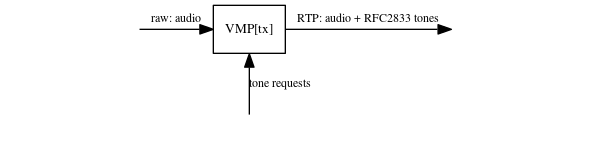
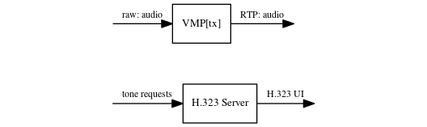
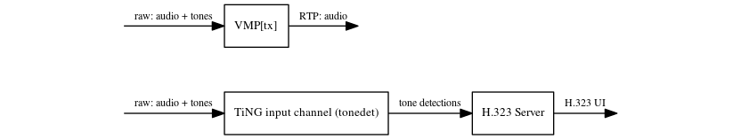
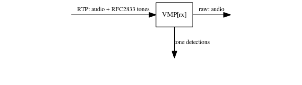
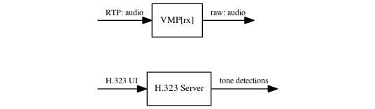
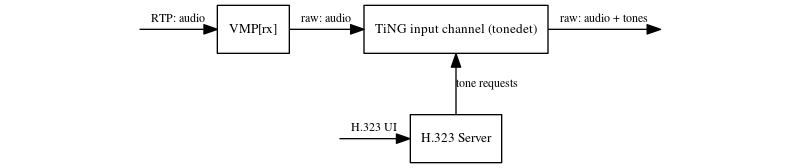

In traditional TDM telephony, tones are generated and detected in the audio stream. The characteristics of the tones are chosen to be reasonably robust to the types of audio degradation that may occur on traditional telephone systems - e.g. analogue noise and distortion. In IP telephony the types of audio degradation are different, typically being as a result of packet loss or the codec being used. Tones are not particularly robust to these types of degradation and thus other, out of band, methods to transfer them have been devised. This application note briefly describes these methods and explains the pros and cons of using them with Prosody X.
Aculab supports two methods of transferring tones out of band.
In this method, the tones are transferred via the H.323 IP connection. Since this is a different connection from that transferring the audio, the time alignment between the audio and the tones is imprecise. If the local endpoint is creating H.323 UI tone indications in response to tones that are in its outgoing audio stream, it must eliminate these in-band tones from the audio. To see why, consider that the remote endpoint may use received H.323 UI tone indications to regenerate tones into the audio stream (typical for a VoIP->TDM gateway) and also note the time alignment issue: there is no guarantee that the regenerated tones will coincide with the position of any tones received in-band and thus tone corruption may occur. The solution to this is for the local endpoint to eliminate the in-band tones.
Using Prosody with H.323, on the transmit side the H.323 Server configures the VMP[tx] to automatically detect and eliminate in-band tones in the outgoing audio, with the detected tones used to automatically generate H.323 UI tone indications. These UI tone indications may also be generated manually via the H.323 API. On the receive side, the H.323 server uses the VMP[rx] to regenate tones in band in response to the H.323 UI.
RFC2833 provides a method for transferring the tones over the same RTP link as the audio, through use of a different payload type. It uses redundancy to reduce the effects of packet loss and transfers tone indications rather than the tones themselves. Since the tones are transferred on the same connection as the audio, time alignment is maintained and there is no need to eliminate any outgoing in-band tones. In fact, RFC2833 recommends that such tones are either left in the audio or that audio packets are not transmitted for the duration of any tones.
Using Prosody, on the transmit side the VMP[tx] can be configured to generate RFC2833 tone indications automatically in response to in-band tones in the outgoing audio. It can also be used to generate these indications manually via the VMP[tx] API. On the receive side, the VMP[rx] may be used to detect the RFC2833 tones and, if required, regenerate them in-band into the incoming audio.
In a Prosody system, the outgoing tones may have originated either in band - e.g. from a TDM timeslot or a TiNG channel - or be generated directly out of band using the H.323 API (H.323) or the VMP[tx] API (RFC2833).
If the tones originated in-band, tones may either be eliminated and sent as H.323UI or left in and sent as RFC2833 packets. This method would generally be used in TDM->VoIP gateway applications. It is also useful for TiNG channels in that it makes the core application code dealing with the channel independent of whether the audio it produces is sent over VoIP or traditional TDM telephony. However, it does use unneccessary DSP resources in this case because the VMP[tx] must perform tone elimination (H.323UI) or tone detection (RFC2833) - for tones that have been generated in the same DSP. This resource usage may be avoided if the tones are not produced by the TiNG channel but are, instead, generated directly by the H.323 API or the VMP[tx] API (RFC2833).



In a Prosody system, the incoming audio can be fed to a combination of TiNG channels and TDM timeslots. Out of band tones may be either used to regenerate in-band tones into the audio or recognised directly using the H.323 API (H.323) or the VMP[rx] API (RFC2833).
Using the incoming out of band tones to regenerate in-band tones into the audio would generally be performed by VoIP->TDM gateway applications. It may also be useful for TiNG channels in that it makes the core application code dealing with the channel independent of whether the received audio is from VoIP or traditional TDM telephony. However, it may use unneccessary DSP resources because the VMP[rx] is having to regenerate the tones, perhaps purely for the TiNG channel to recognise them (e.g. sm_get_recognised()). If the tones are being recorded (e.g. sm_get_recorded_data()), however, the VMP[rx] resource usage is necessary. This resource usage may be avoided if the incoming out of band tones are recognised directly using the H.323 API (H.323) or the VMP[rx] API (RFC2833).


